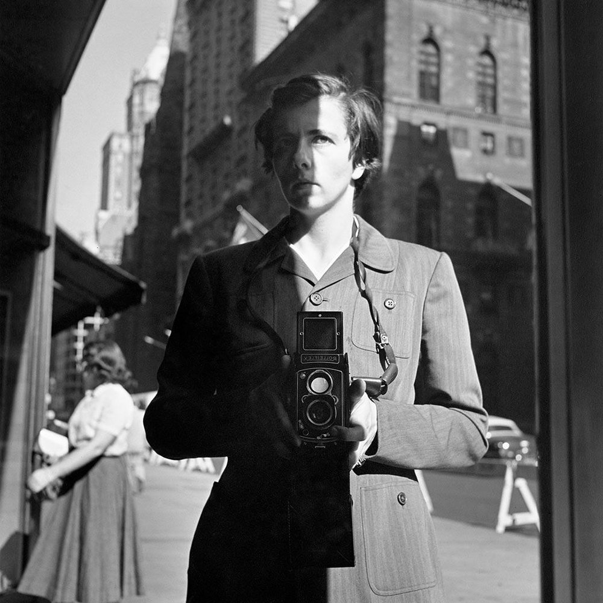

Self-Portrait, New York, NY
Vivian Maier · 18 October 1953 · Photograph · Maloof Collection
In copyright. Look and learn: shown for study, not for download.
Vivian Maier was twenty-seven and living in New York when she made this on 18 October 1953; she had come from France two years earlier and worked in a sweatshop. In 1956 she moved to Chicago, where she worked as a nanny for the next forty years, photographing on her days off, usually with a Rolleiflex. None of her pictures were published in her lifetime. In 2007 she fell behind on payments for a storage unit and its contents were auctioned; a collector bought about 30,000 of her negatives.